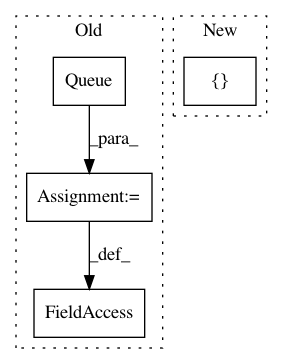

ef035e2c9553edfabeb3964c94b2859c4f665230,deepvariant/openvino_estimator.py,OpenVINOEstimator,__init__,#OpenVINOEstimator#Any#Any#Any#,87
Before Change
self.input_fn = input_fn
self.model = model
self.outputs = {}
self.results = queue.Queue()
self.process_thread = threading.Thread(target=self._process)
self.features = tf.compat.v1.data.make_one_shot_iterator(
self.input_fn({"batch_size": 64})).get_next()
After Change
self.tf_sess = tf.compat.v1.Session()
self.input_fn = input_fn
self.model = model
self.outputs = []
def __iter__(self):
Read input data.
features = tf.compat.v1.data.make_one_shot_iterator(
In pattern: SUPERPATTERN
Frequency: 3
Non-data size: 4
Instances
Project Name: google/deepvariant
Commit Name: ef035e2c9553edfabeb3964c94b2859c4f665230
Time: 2020-12-03
Author: pichuan@google.com
File Name: deepvariant/openvino_estimator.py
Class Name: OpenVINOEstimator
Method Name: __init__
Project Name: MaybeShewill-CV/CRNN_Tensorflow
Commit Name: ed66679b71989f55cc25d7adf69e386ad27c2063
Time: 2019-03-22
Author: luoyao@baidu.com
File Name: data_provider/tf_io_pipline_fast_tools.py
Class Name:
Method Name:
Project Name: analysiscenter/batchflow
Commit Name: af9280ba162009408b4bc6dbc0edfe94dc3911c5
Time: 2017-04-18
Author: rhudor@gmail.com
File Name: dataset/pipeline.py
Class Name: Pipeline
Method Name: run